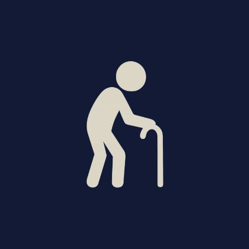
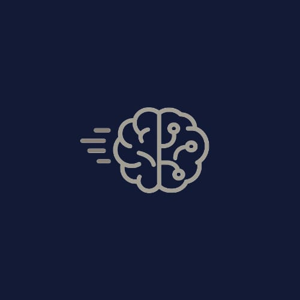
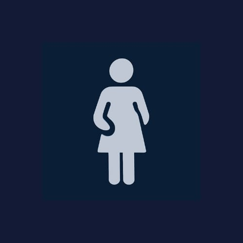
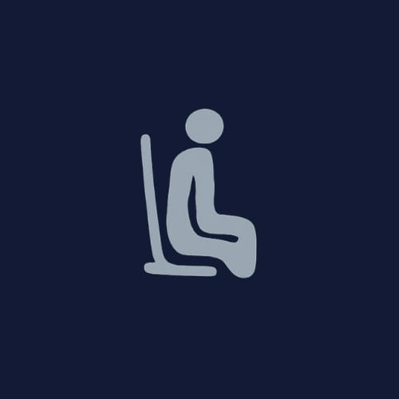
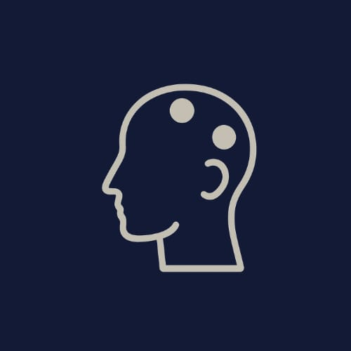

Geriatric Physiotherapy
Our geriatric care program helps older adults maintain independence through balance training, strength and flexibility exercises.
Learn more →Our services
Detailed care
Individualised physiotherapy and rehabilitation for every stage of life and recovery.

Our geriatric care program helps older adults maintain independence through balance training, strength and flexibility exercises.
Learn more →
A multidisciplinary approach to manage chronic pain through physical therapy, lifestyle support and personalised rehabilitation.
Learn more →
Designed to help patients recover from surgery as safely and confidently as possible.
Learn more →
Comprehensive treatment and rehabilitation for acute and chronic athletic injuries.
Learn more →
Support for neurological conditions including stroke, spinal cord injury and Parkinson’s disease.
Learn more →
Developmental and rehabilitative care for children with cerebral palsy, developmental delay and congenital conditions.
Learn more →
Care for prenatal and postnatal needs, pelvic-floor dysfunction and osteoporosis management.
Learn more →
Proactive programmes for healthy movement, injury prevention and optimal physical function.
Learn more →
Workplace assessment and interventions that help prevent injury and improve wellbeing.
Learn more →
A multimodal approach using manual therapy, exercise and lifestyle modification.
Learn more →